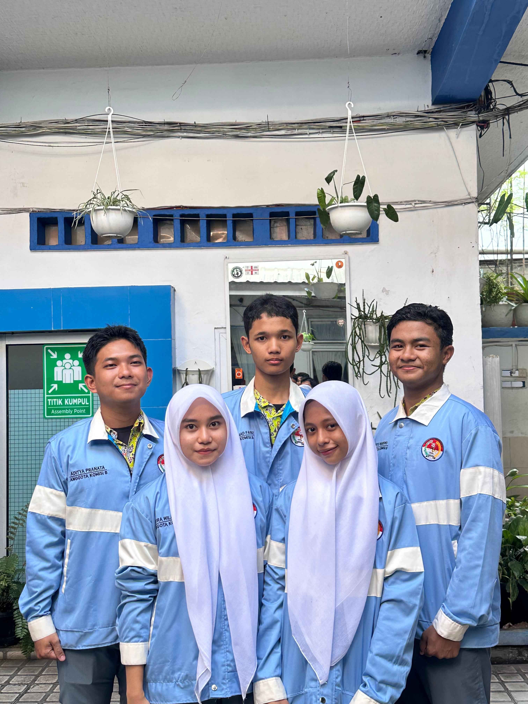

MPK SMAN 6 MEDAN
Pelopor Resmi Pengaduan Siswa
Pelopor Resmi Pengaduan Siswa
Mengawasi Ekstrakurikuler

Komisi B MPK merupakan komisi yang bertugas mengoordinasi dan mengawasi kegiatan ekstrakurikuler di sekolah agar berjalan tertib, aktif, dan sesuai dengan ketentuantuan yang berlaku.